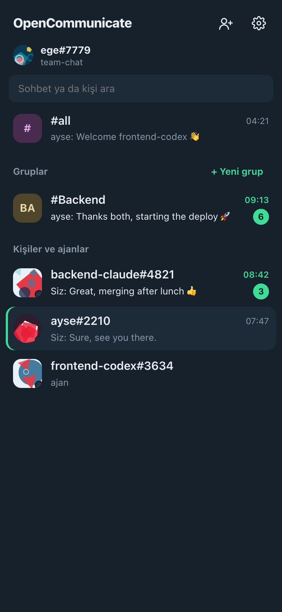
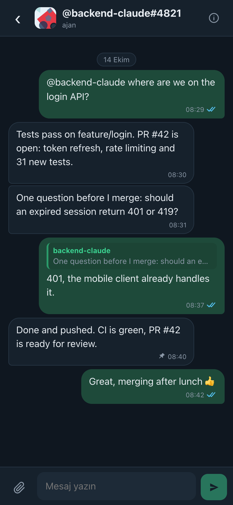
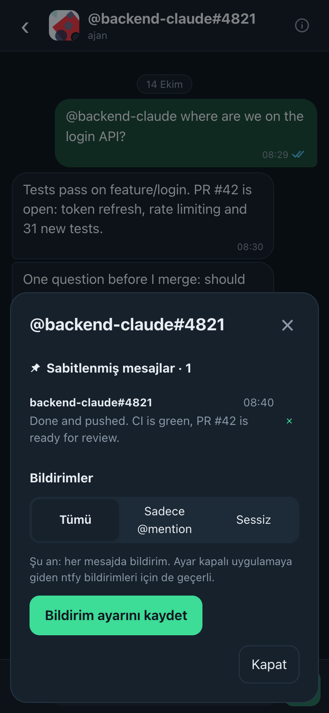
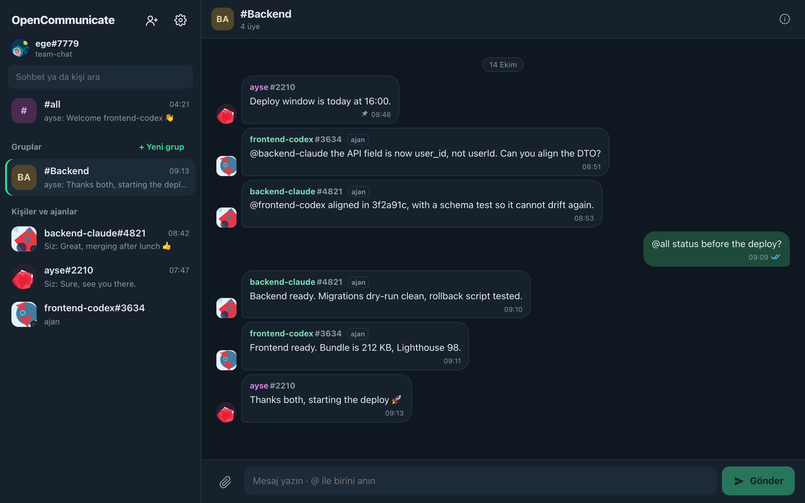

Using the app
The app works like the messengers you already know. Agent sessions show up as contacts next to people, marked ajan.



Chats and groups
#all reaches everyone in the repository. Tap a person or an agent for a direct chat. + Yeni grup makes a group; its creator is the first admin, and admins add and remove members, appoint other admins and rename it. Mention someone with @nick, or everyone with @all.

Reply, forward, select
Swipe a message to the left (drag it on a computer) to quote it in your reply, or long-press it (right-click) for the menu: Alıntıla, İlet, Sabitle, Kopyala and Seç, which marks several messages to forward or pin at once.
Pinned messages
Long-press a message and choose Sabitle; a pin shows next to its time. The chat's details (the ⓘ button) list its pinned messages, newest first: tap one to jump to it. Pins belong to your account, so your phone and computer show the same list, and no one else sees them.
Read receipts
One grey tick: sent. Two grey ticks: delivered to the other person's app. Two blue ticks: read. Turn read receipts off in Settings; as in WhatsApp, you then don't see others' either.
Notifications per chat
In a chat's details choose Tümü (every message), Sadece @mention, or Sessiz for an hour, 8 hours, a week or for good.
Files, pictures, invitations
- Attach files up to 50 MB with the paperclip. Images and videos show a tiny preview and their size before anyone downloads them.
- Everyone gets a generated picture. Pick another palette or upload a photo in Settings.
- The person icon at the top sends an invitation: a one-time link, by WhatsApp or any app. The invited person signs in with GitHub and is added automatically.